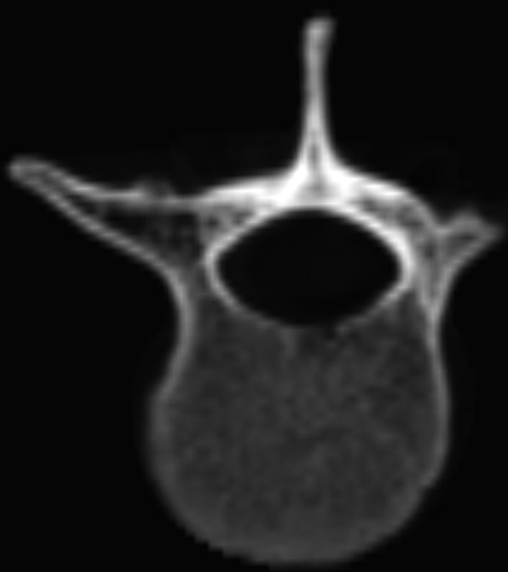
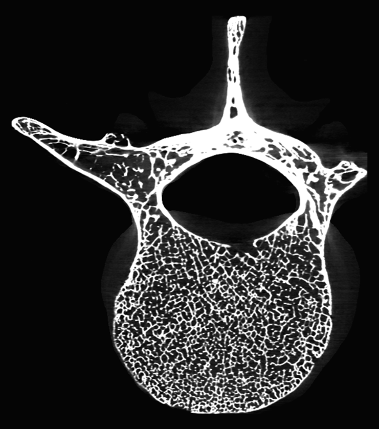

Local BV/TV error
How much bone is preserved?
Measure bone volume fraction in fixed cancellous subregions and report the absolute error against the paired reference.
MICCAI 2027 Challenge proposal
Preserving trabecular structure in lumbar CT.
A benchmark for vertebral CT super-resolution and few-shot transfer to clinical photon-counting CT, motivated by osteoporosis research.


Two ex vivo tasks share a Micro-PCCT reference. A third asks how well models adapt to in vivo imaging.
01
Reconstruct trabecular structure from one routine clinical CT volume, with the same specimen’s Micro-PCCT as reference.
Clinical CT Micro-PCCT grid
02
Test a single model on held-out combinations of field of view, slice thickness and reconstruction kernel.
Held-out CT protocols Micro-PCCT grid
03
Adapt an ex vivo model with a small shared clinical set. Evaluate on independent patients with qualified PCCT reference pairs.
Clinical PCCT Higher-sampling PCCT grid
The clinical ranking depends on verified pairs, measurement repeatability and approved data access.
The public release provides original DICOM and registered NIfTI. Clinical CT acquisitions are rigidly aligned with ANTs to the 105 μm Micro-PCCT grid.
Counts are vertebral specimens. The in vivo PCCT cohort is separate.
195 or 586 μm
500 or 1,000 μm
Bone or soft tissue
All eight combinations were acquired for the published dataset. See Table 2 in the Scientific Data paper.
A reconstruction can preserve total bone volume while misplacing individual trabeculae. The proposed ex vivo endpoints capture both sources of error.
Local BV/TV error
Measure bone volume fraction in fixed cancellous subregions and report the absolute error against the paired reference.
Trabecular spatial F1
Use a fixed registration tolerance and report both missed reference bone and predicted bone without local reference support.
The proposed clinical assessment uses apparent trabecular spacing, cancellous HU agreement and blinded review of visible structure against a qualified PCCT reference. These are technical endpoints for osteoporosis research.
The Scientific Data descriptor reports image quality and bone morphometry separately. The public benchmark includes interpolation, SRCNN, U-Net, ESRGAN and SwinIR.